界面介绍
默认工作流
长这样, 具体细节将在后面 基本概念 介绍.
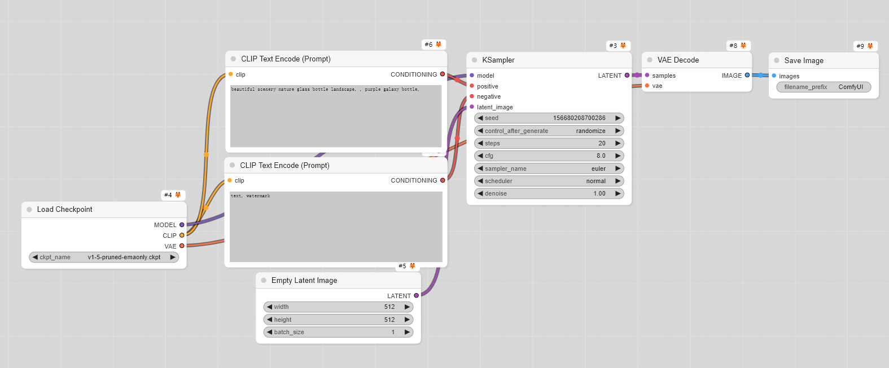
调节视图的组件
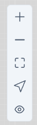
分别是 放大, 缩小 (这两个和鼠标中键滚动一样), 适应, 选择/平移 模式 (选择模式可选择节点, 平移模式拖动整个工作流移动, 快捷键是空格键, 按住空格键, 拖动鼠标就平移) 和 显示/关闭 连接线.
“运行” 管理区域
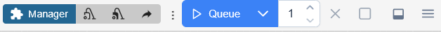
从左到右分别是 管理器, 卸载模型, 释放, 分享, 队列, 批次, 停止, 清除排队, 显示logs/终端, 隐藏菜单:
-
卸载模型 (将加载到显存/内存里的模型卸载)
-
释放模型和节点缓存
-
分享(将工作流分享出去)
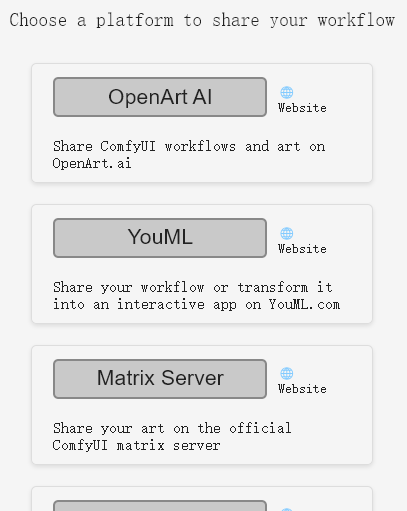
-
队列, 分别是
点击执行,生成完成后执行,改变工作流后执行: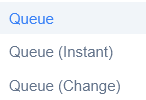
-
运行次数
-
停止运行当前任务
-
清除等待中的任务
-
打开底部
logs和终端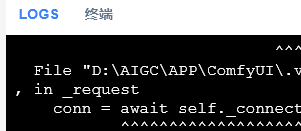
-
隐藏菜单
管理器
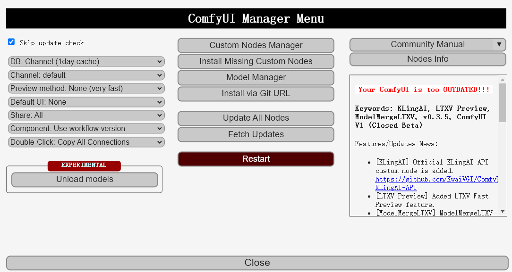
-
Skip update check: 跳过更新检查
-
DB: 配置检索 节点/模型 信息的位置。默认一天内的缓存, 如果设置为本地，则忽略通道，如果设置为通道（远程），则每次打开列表时都会获取最新信息。
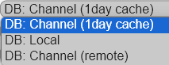
-
Channel: 配置通道，以便从自定义节点列表（包括缺失节点）或模型列表中检索数据。请注意，这里使用了本地缓存信息。
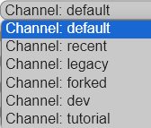
-
Preview method: 配置在采样过程如何预览图像生成的过程。None 不显示最快, 其他有微小的影响.
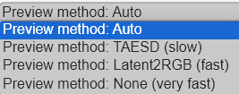
-
Default UI: 设置桌面启动时在主菜单中显示的默认状态.
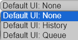
-
Share: 隐藏主菜单中的共享按钮，或在点击时设置默认操作。例如, 在通过点击共享按钮共享时，配置默认共享站点.
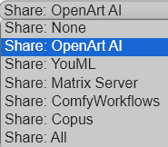
-
Component: 加载工作流时，配置要使用的组件版本.
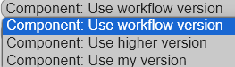
-
Double-Click: 设置双击节点标题区域时的行为.
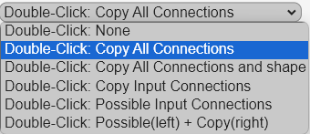
-
Unload models: 卸载模型
-
Custom Nodes Manager: 管理节点
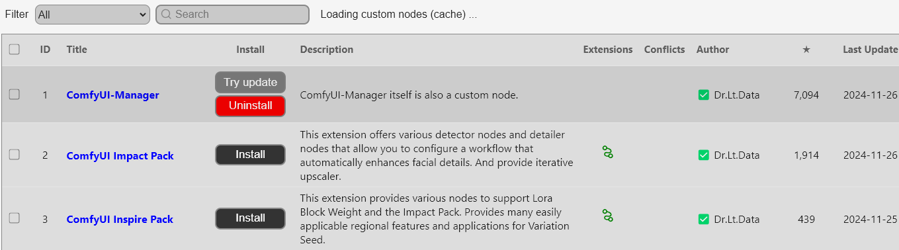
-
Install Missing Custom Nodes: 安装缺失节点, 如果工作流中显示有节点缺失, 点击这里将进入节点管理进行缺失节点安装.
-
Model Manager: 模型管理, 这里管理模型, 例如安装, 卸载.
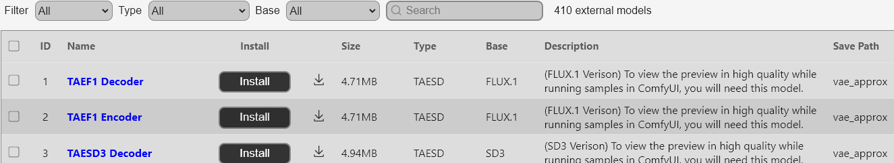
-
Install via Git URL: 通过 GitHub 链接安装节点.
-
Update All Nodes: 更新所有节点.
-
Fetch Updates: 抓取更新.
-
Restart: 重启
-
Community Manual: 社区手册
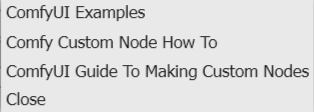
-
Nodes Info: 所有节点的信息大全.
-
Features/Updates News: 更新公告.
帮助
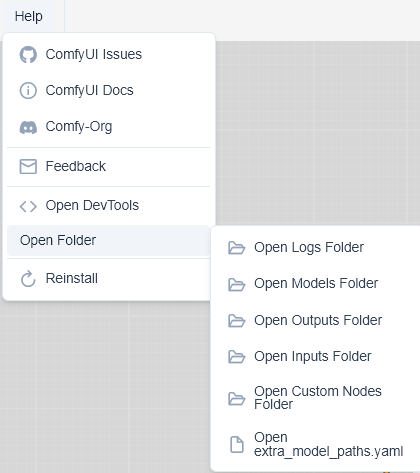
- ComfyUl Issues 提问
- ComfyUI Docs 文档
- Comfy-Org 社区
- Feedback 反馈
- Open DevTools 打开开发工具
- Reinstall 重装
- Open Folder 打开文件夹
- Open Logs Folder 打开 logs 文件夹
- Open Models Folder 打开模型文件夹
- Open Outputs Folder 打开输出文件夹
- Open Inputs Folder 打开输入文件夹
- Open Custom Nodes Folder 打开节点文件夹
- Open extra_model_paths.yaml 打开自定义模型路径文件, 可以将模型或节点放在指定的文件夹中, 然后在这个文件里配置.
编辑
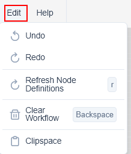
- Undo 撤销 Ctrl + Z
- Redo 重做 Ctrl + Y
- Refresh Node Definitions 刷新节点, 快捷键 R, 例如刚把模型放入文件夹, 刷新节点就可以加载了.
- Clear Workflow 清理工作流, 将工作流全部清掉, 选中节点, 可以用快捷键
Backspace删掉节点. - Clipspace: CLIP 空间, 目前只对图像有效, 绘蒙版时使用, 后面会详细介绍.
工作流管理
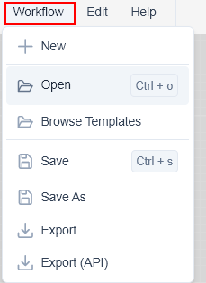
- New 新建
- Open 打开已有工作流, 快捷键 Ctrl+o
- Browse Templates 选择自带工作流模板
- Save 保存工作流, 快捷键 Ctrl+s
- Save As 另存为
- Export 导出工作流
- Export(API) 导出(包含API)
文件管理
-
查看队列历史, 应用生成的图像 (右键点击图像选择), 或删除历史
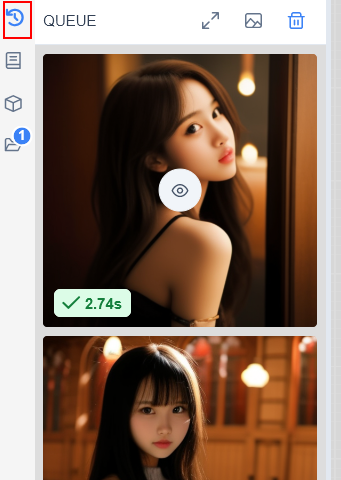
-
查看节点库. 鼠标放到节点上, 会显示节点信息, 以及参数介绍, 还可以标星方便使用.
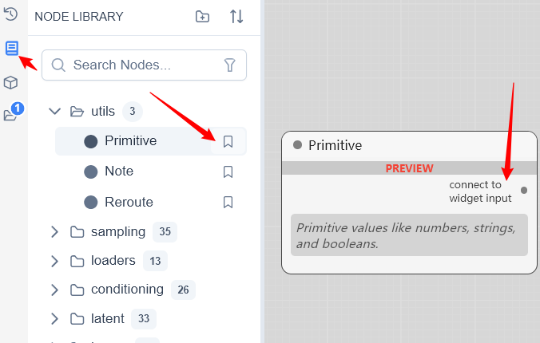
-
模型库, 查看模型. 点击模型会自动生成加载节点.
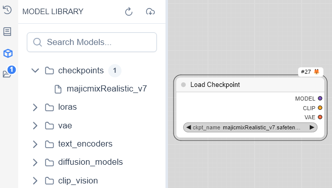
-
工作流管理, 点击工作流直接打开, 右击可以重命名, 删除, 应用. 同样可以选择内建模板, 打开已有工作流或新建.
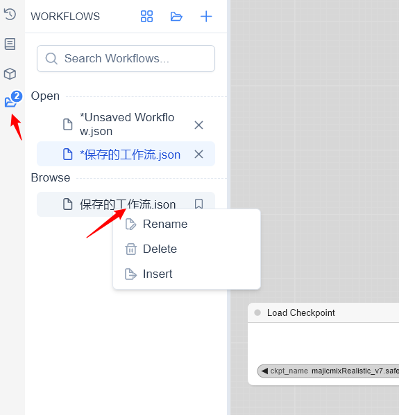
设置
Comfy 设置
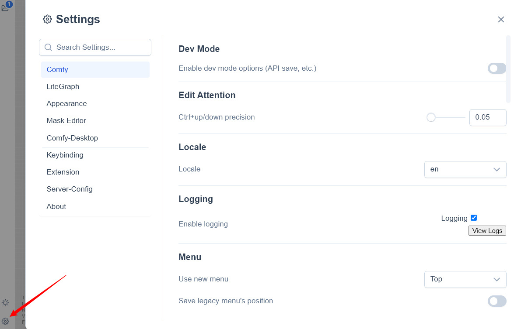
-
Dev Mode. 开发者模式
Enable dev mode options (API save, etc.). 启用开发模式选项（API保存等）
-
Edit Attention. 编辑
AttentionCtrl+up/down precision. Ctrl+up/down 调节精度
-
Locale. 本地化, 需要安装中文插件才能显示中文
-
Logging. 打开/关闭 logging, 出错可以将 logs 发给大神们求助.
Enable logging
-
Menu. 菜单
Use new menu. 使用新菜单, 可选顶部, 底部, 或关闭.
Save legacy menu’s position. 保留旧菜单的位置
-
Model Library. 模型库
What name to display in the model library tree view. 在模型库中显示什么名称。
Select “filename” to render a simplified view of the raw filename (without directory or “.safetensors” extension) in the model list. Select “title” to display the configurable model metadata title. 选择“filename”以在模型列表中呈现原始文件名的简化视图（不带目录或“.safetensors”扩展名）。选择“title”以显示可配置的模型元数据标题。
Automatically load all model folders. 自动加载所有模型文件夹。
If true, all folders will load as soon as you open the model library (this may cause delays while it loads). If false, root level model folders will only load once you click on them. 如果为true，则打开模型库后将立即加载所有文件夹（这可能会导致加载时的延迟）。如果为false，则只有在您单击根级模型文件夹后才会加载它们。
-
Node 节点
Show experimental nodes in search. 在搜索中显示实验节点
Experimental nodes are marked as such in the UI and may be subject to significant changes or removal in future versions. Use with caution in production workflows. 实验节点在UI中标记为这样，在未来的版本中可能会发生重大变化或被删除。在生产工作流程中谨慎使用.
Show deprecated nodes in search. 在搜索中显示已弃用的节点
Deprecated nodes are hidden by default in the UI, but remain functional in existing workflows that use them. 默认情况下，弃用的节点在UI中隐藏，但在使用它们的现有工作流中仍然可以正常工作。
-
Node Search Box. 节点搜索框
- Number of nodes suggestions. 建议的节点数量
Only for litegraph searchbox/context menu. 仅适用于 litegraph 搜索框/快捷菜单
- Show node frequency in search results. 在搜索结果中显示节点频率
Only applies to the default implementation. 仅适用于默认实现
- Show node id name in search results. 在搜索结果中显示节点 id 名称
Only applies to the default implementation.
- Show node category in search results. 在搜索结果中显示节点类别
Only applies to the default implementation.
- Node preview. 节点预览
Only applies to the default implementation.
- BETA: Node search box implementation. 节点搜索框实现. 可选默认, 或旧版.
-
Node Widget. 节点组件
Widget control mode. Controls when widget values are updated (randomize/increment/ decrement), either before the prompt is queued or after. 组件控制模式. 控制何时更新组件值(随机/增加/减少)，在提示词队列执行前或执行后
Textarea widget spellcheck. 文本区域小部件拼写检查
-
Node Input Conversion Submenus. 节点输入转换子菜单
In the node context menu, place the entries that convert between input/widget in sub-menus. 在节点快捷菜单中，将
输入/小部件之间转换的条目放置在子菜单中 -
Queue
Queue history size. The maximum number of tasks that show in the queue history. 队列历史记录数。队列历史记录中显示的最大任务数
-
Queue Button. 队列按钮
Batch count limit. The maximum number of tasks added to the queue at one button click. 批次计数限制。一键添加到队列的最大任务数
-
Settings. 设置
BETA: Show extension panel in settings dialog. 在设置对话框中显示扩展面板
-
Tree Explorer.
Tree explorer item padding
-
Validation. 验证
Validate node definitions (slow). Recommended for node developers. This will validate all node definitions on startup. 验证节点定义（缓慢）。推荐给节点开发人员。这将在启动时验证所有节点定义
Validate workflows. 验证工作流
-
Window. 窗口
Show confirmation when closing window. 关闭窗口时显示确认
-
Workflow. 工作流
Save and restore canvas position and zoom level in workflows. 在工作流中保存, 恢复 画布位置 和 缩放级别
Opened workflows position. 打开工作流位置, 可选顶部或侧边栏
Prompt for filename when saving workflow. 保存工作流时提示输入文件名
Require confirmation when clearing workflow. 清除工作流时需要确认
BETA: Show missing models warning. 显示缺失模型警告
Show missing nodes warning. 显示缺失节点警告
Sort node IDs when saving workflow. 保存工作流时对节点ID进行排序
LiteGraph 设置
-
Canvas 画布
Always snap to grid. 始终捕捉到网格
Snap to grid size. When dragging and resizing nodes while holding shift they will be aligned to the grid, this controls the size of that grid. 对齐网格大小。按住shift键拖动和调整节点大小时，它们将与网格对齐，这控制了网格的大小
Enable fast-zoom shortcut (Ctrl + Shift + Drag). 启用快速缩放快捷方式（Ctrl+Shift+拖动）
Show graph canvas menu. 显示图形画布菜单
Canvas zoom speed. 画布缩放速度
Show canvas info on bottom left corner (fps, etc.). 在左下角显示画布信息（fps 等）
-
Graph
Link Render Mode. 连接线渲染模式 (曲线, 直线等)
-
Group 组
Double click group title to edit. 双击组标题进行编辑
Group selected nodes padding. 组边距
-
Link 连线
Link midpoint markers. 连线中点标记 (圆点, 箭头)
-
Link Release. 连线松开
Action on link release (Shift). 按住 Shift 松开连线
Action on link release (No modifier). 不按 Shift 松开连线
-
Menu 菜单
Invert Context Menu Scrolling. 反转快捷菜单滚动
-
Node 节点
Enable DOM element clipping (enabling may reduce performance). 启用DOM元素剪裁（启用可能会降低性能）
Middle-click creates a new Reroute node. 单击鼠标中键可创建新的 “转接” 节点
Keep all links when deleting nodes. When deleting a node, attempt to reconnect all of its input and output links (bypassing the deleted node). 删除节点时保留所有链接. 删除节点时，尝试重新连接其所有输入和输出链路（绕过已删除的节点）
Snap highlights node. When dragging a link over a node with viable input slot, highlight the node. 捕捉高亮节点. 在拖动线经过具有可输入点的节点时，突出显示该节点
Auto snap link to node slot. 自动捕捉可连接线到节点插槽
Enable Tooltips. 启用工具提示
Node life cycle badge mode. 节点激活标记
Node ID badge mode. 节点 ID 标记
Node source badge mode. 节点来源标记
Double click node title to edit. 双击节点标题编辑
-
Node Widget
Float widget rounding decimal places [0 = auto]. (requires page reload). 浮点控件四舍五入小数位数[0=auto]。（需要重新加载页面）
Disable default float widget rounding. (requires page reload) Cannot disable round when round is set by the node in the backend. 禁用默认浮点控件舍入。（需要重新加载页面）当舍入由后端节点设置时，无法禁用舍入
Disable node widget sliders. 禁用节点小部件滑块
Preview image format. When displaying a preview in the image widget, convert it to a lightweight image, e.g. webp, jpeg, webp;50, etc. 预览图像格式. 在图像小部件中显示预览时，将其转换为轻量级图像，例如webp、jpeg、webp；50等
-
Pointer 鼠标指针
Double click interval (maximum). The maximum time in milliseconds between the two clicks of a double-click. Increasing this value may assist if double-clicks are sometimes not registered. 双击间隔（最大值）。双击两次之间的最长时间（毫秒）。如果双击有时未生效，则增加此值可能会有所帮助
BETA: Pointer click drift delay. After pressing a pointer button down, this is the maximum time (in milliseconds)that pointer movement can be ignored for. Helps prevent objects from being unintentionally nudged if the pointer is moved whilst clicking. 指针点击漂移延迟。按下指针按钮后，这是指针移动可以忽略的最长时间（以毫秒为单位）。有助于防止在单击时移动指针时无意中轻推对象
BETA: Pointer click drift (maximum distance). If the pointer moves more than this distance while holding a button down, it is considered dragging (rather than clicking). Helps prevent objects from being unintentionally nudged if the pointer is moved whilst clicking. 指针点击漂移（最大距离）。如果指针在按住按钮的同时移动超过此距离，则被视为拖动（而不是单击）。有助于防止在单击时移动指针时无意中轻推对象
-
Reroute Beta. 转接节点测试
BETA: Opt-in to the reroute beta test. Enables the new native reroutes. Reroutes can be added by holding alt and dragging from a link line, or on the link menu. Disabling this option is non-destructive- reroutes are hidden. 选择转接节点测试。启用新的转接节点。通过按住alt并从连接线或连接菜单上拖动，可以添加转接节点。禁用此选项是非破坏性的-转接节点被隐藏
Appearance 外观
-
Color Palette 主题
-
Node
Node opacity. 节点不透明度
-
Node Widget
Textarea widget font size. 文本区域小部件字体大小
-
Sidebar
Sidebar size. 侧边栏尺寸
Sidebar location. 侧边栏位置
Mask Editor 蒙版编辑
-
Brush Adjustment 笔刷调整
BETA: Lock brush adjustment to dominant axis. When enabled, brush adjustments will only affect size OR hardness based on which direction you move more. 将笔刷调整锁定到主导轴. 启用后，刷子调整只会根据您移动的方向影响尺寸或硬度
BETA: Brush adjustment speed multiplier. Controls how quickly the brush size and hardness change when adjusting. Higher values mean faster changes. 笔刷调整速度倍数. 控制调整时画笔大小和硬度的变化速度。值越高，变化越快
-
New Editor
BETA: Use new mask editor. 启动新的蒙版编辑
Comfy-Desktop 桌面设置
-
General 一般设置
Send anonymous crash reports. 发送匿名事件报告
Automatically check for updates. 自动检查更新
Keybinding 编辑快捷键 (可自定义)
-
Comfy.NewBlankWorkflow 新建工作流
-
Comfy.OpenWorkflow 打开工作流
Ctrl+o -
Comfy.LoadDefaultWorkflow 加载默认工作流
-
Comfy.SaveWorkflow 保存工作流
Ctrl+s -
Comfy.SaveWorkflowAs 工作流另存为
-
Comfy.ExportWorkflow 导出工作流
-
Comfy.ExportWorkflowAPI 导出工作流(API)
-
Comfy.Undo 撤销
-
Comfy.Redo 重做
-
Comfy.ClearWorkflow 删除工作流
Backspace -
Comfy.Canvas.ResetView 重设视图
-
Comfy.OpenClipspace 打开 Clipspace
-
Comfy.RefreshNodeDefinitions 刷新节点
r -
Comfy.Interrupt 停止
Ctrl+Alt+Enter -
Comfy.ClearPendingTasks 清除等待任务
-
Comfy.BrowseTemplates 打开默认工作流模板
-
Comfy.Canvas.ZoomIn 放大
Alt+= -
Comfy.Canvas.ZoomOut 缩小
Alt+- -
Comfy.Canvas.FitView 适应窗口
. -
Comfy.Canvas.ToggleLock 切换 选择/拖动 模式
-
Comfy.Canvas.ToggleLinkVisibility 切换连接线 可见/不可见
-
Comfy.QueuePrompt
Ctrl+Enter -
Comfy.QueuePromptFront
Ctrl+Shift+Enter -
Comfy.ShowSettingsDialog 打开设置面板
Ctrl+, -
Comfy.Graph.GroupSelectedNodes 将选定节点一组
Ctrl+g -
Workspace.NextOpenedWorkflow 切换到下一个打开的工作流
-
Workspace.PreviousOpenedWorkflow 切换到上一个打开的工作流
-
Comfy.Canvas.ToggleSelectedNodes.Mute 屏蔽选择的节点
Ctrl+m -
Comfy.Canvas.ToggleSelectedNodes.Bypass 禁用选择的节点
Ctrl+b -
Comfy.Canvas.ToggleSelectedNodes.Pin
-
Comfy.Canvas.ToggleSelected.Pin 锁定或解锁选择的节点或组
p -
Comfy.Canvas.ToggleSelectedNodes.Collapse 折叠选择的节点
Alt+c -
Comfy.ToggleTheme 切换主题
-
Workspace.ToggleBottomPanel 切换底部面板
-
Workspace.ToggleFocusMode 隐藏/打开 菜单栏
f -
Comfy.Graph.FitGroupToContents 根据内容调整组
-
Workspace.ToggleSidebarTab.queue 隐藏/打开 侧边栏队列历史
q -
Workspace.ToggleSidebarTab.node-library 隐藏/打开 侧边栏节点库
n -
Workspace.ToggleSidebarTab.model-library 隐藏/打开 侧边栏模型
m -
Workspace.ToggleSidebarTab.workflows 隐藏/打开 侧边栏工作流
w -
Workspace.ToggleBottomPanelTab.logs-terminal 打开/隐藏 logs Ctrl+`
-
Workspace.ToggleBottomPanelTab.command-terminal 打开/隐藏 终端
-
Comfy.GroupNode.ConvertSelectedNodesToGroupNode 将所选节点转换为组节点
Alt+g -
Comfy.GroupNode.UngroupSelectedGroupNodes 放弃分组所选的组节点
Alt+Shift+G -
Comfy.GroupNode.ManageGroupNodes 管理组节点
-
Comfy-Desktop.Folders.OpenLogsFolder 打开 logs 文件夹
-
Comfy-Desktop.Folders.OpenModelsFolder 打开模型文件夹
-
Comfy-Desktop.Folders.OpenOutputsFolder 打开输出文件夹
-
Comfy-Desktop.Folders.OpenInputsFolder 打开输入文件夹
-
Comfy-Desktop.Folders.OpenCustomNodesFolder 打开节点文件夹
-
Comfy-Desktop.Folders.OpenModelConfig 打开模型路径配置文件
-
Comfy-Desktop.OpenDevTools 打开开发工具
-
Comfy-Desktop.OpenFeedbackPage 打开反馈页
-
Comfy-Desktop.Reinstall 重装
-
Comfy-Desktop.Restart 重启
Extension 扩展
-
Comfy.ColorPalette 调色板
-
Comfy.NodeTitleEditor 节点标题编辑
-
Comfy.NodeBadge 节点标志
-
Comfy.WidgetInputs 组件输入
-
Comfy.Clipspace
-
Comfy.ContextMenuFilter 快捷菜单过滤器
-
Comfy.DynamicPrompts 动态提示
-
Comfy.EditAttention 编辑 Attention
-
Comfy.GroupNode 组节点
-
Comfy.GroupOptions 组选项
-
Comfy.InvertMenuScrolling 反转菜单滚动
-
Comfy.Keybinds 密钥绑定
-
Comfy.MaskEditor 编辑蒙版
-
Comfy.NodeTemplates 节点模板
-
Comfy.NoteNode 注释节点
-
Comfy.RerouteNode 转接节点
-
Comfy.SaveImageExtraOutput 保存图像额外输出
-
Comfy.SimpleTouchSupport 简单触控支持
-
Comfy.SlotDefaults 连接点默认
-
Comfy.UploadImage 上传图片
-
Comfy.WebcamCapture 网络摄像头捕获
-
Comfy.AudioWidget 音频组件
-
Comfy.UploadAudio 上传音频
-
Comfy.Load3D 加载 3d
-
Comfy.Load3DAnimation 加载 3d 动画
-
Comfy.Preview3D 预览 3d
-
Comfy.ElectronAdapter
-
Comfy.Manager.NodeFixer 节点修复器
-
Comfy.ManagerMenu 管理菜单
Server-Config
未添加
About
关于 ComfyUI, 系统信息, 设备信息等